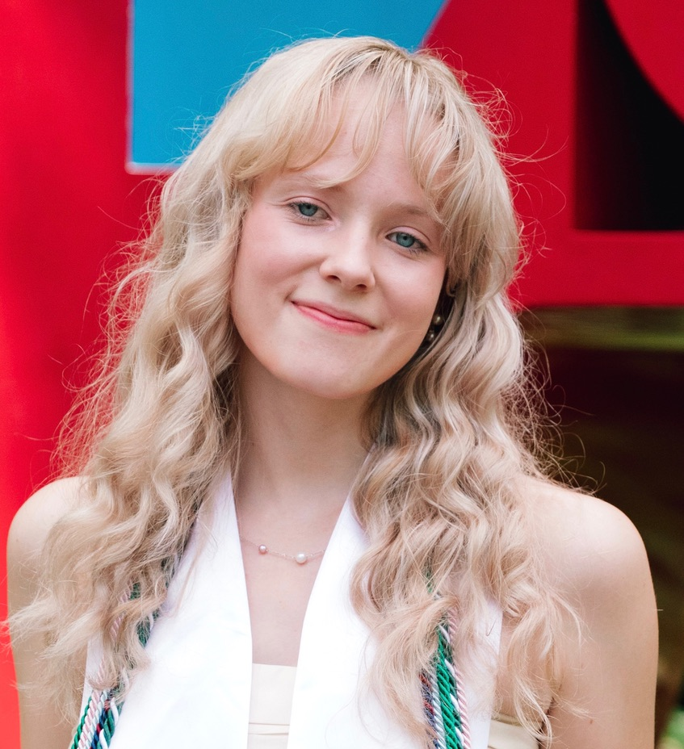

PhD Student, Earth and Environmental Sciences, University of Pennsylvania
I study ocean ecology and biogeochemistry in climate models, focusing on how marine ecosystems and carbon cycling respond to climate change — particularly in the Southern Ocean.
My research combines climate modeling, ocean biogeochemistry, and ecological analysis to better understand how changing ocean conditions affect marine ecosystems and the global carbon cycle. I am particularly interested in Southern Ocean ecosystem dynamics, phytoplankton community structure, and the role of the ocean in climate mitigation.
Beyond research, I am passionate about science communication, environmental policy, and connecting scientific research to public decision-making.